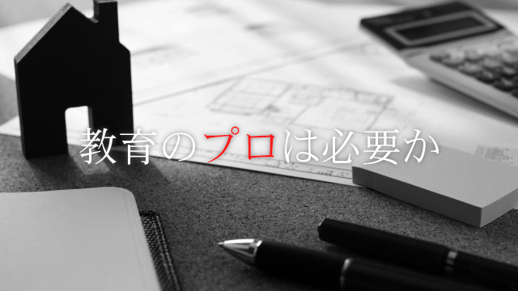

先日東京に遊びに行ったときのこと。ウィンドーショッピングも一通り終わり、夕食を食べるためにイタリア料理のお店に入りました。テーブルに案内されて食事を待っていると、なにやら隣のテーブルの会話が耳に届きます。（銀座のお店は狭い！）。普段周りの会話に聞き耳を立てることなどほとんどないのですが、今回は違いました。
「公立中受験ってどうなの？」
「最近はやってますね。うちも子供の中学受験考えたけど、私立中はあれだね、才能だよ才能」
「そうなんですか」
「だって、問題ちょこっと見たけど“ひらめき”がないととても解けない」
「スゴイ難しいっていいますよね…。どうしようかな。うちの子には無理だなぁ」
話題が話題なので、横目にちらっと見たところ40台前半から半ばの男女3人。どうもそれぞれ子供の中学入試について話している様子です。
正直なところ、人生で初めて、全くの他人の会話に口を挟みたくなりました。なぜなら、言っていることが「世間ではそう思われているけれど、実態は全く違う」ことばかり。上の会話の「ひらめき」も、実態は全く違います。私立中の難問ほど「パターン」重視のものはないのです。確かに才能は必要かもしれませんが、その才能は間違っても「数学的ひらめき」ではありません。大量の問題を黙々と解き、覚える「忍耐」の才能こそが必要なのです。
30台から40台の大人にとって、プライベートの重要な話題はだいたい「家」か「教育」です。私自身を振り返ってみても、最近家を買おうと思い立ちいろいろ調べているのですが、金額の大きさや関係する年数の長さから、まさに人生を左右するイベントだな、と実感します。しかも税金やら投資やらかなり複雑なシステムになっているため、全くの素人の私には何が何だか分かりません。そこで、ネットで調べてみると、世間には家に関して包括的にアドバイスしてくれるコンサルタントがたくさん存在することがわかりました。
では、もう一つの話題である「教育」はどうだろうと調べてみると、ほぼ存在しないのが実情です。これは本当に不思議ですね。問題の複雑さや影響の大きさでは、家など比べものにならないテーマのはずなのに一体なぜ？
教育の核は授業ではない
この疑問を深く考えてみると、答えはどうやら教育の定義そのものにありそうです。一般に「教育」、特に小学校中学年以上のそれというと、人々は「授業」を思い浮かべます。よい教育とはよい授業のことであり、よい授業とは成績のあがる授業である。こんな通念があるようです。しかし、ある程度長く塾の講師をやり、小学生から高3生まで教えてみると、教育は授業“ではない”ことがはっきりと分かります。どんなにエレガントな授業を生徒に与えても、その生徒が身につけてきた考え方や価値観とフィットしなければ効果が発揮されません。たとえば、勉強とは効率よく点数を取ることだ、と考える生徒に、じっくりと思考して答えを作り出す方法を教える授業をしたとしても、あまり効果は上がらないでしょう。
では、生徒の考え方や価値観を「教える」のは誰か、といえば、それは親なのです。子供と接する時間が最も長い親が、有形無形に伝えるメッセージの蓄積が生徒の価値観の核になります。よく言われることですが、「問題集をやったらおもちゃを買ってあげるよ」というのは、勉強とは目的ではなく手段であるという価値観の反映でしょう。一般的に日本の最難関大学で（日本だけではなく世界的にも）、学問を「ただの手段である」という価値観を持っているところは一校もありません。学問自体に価値を置かないのであれば、専門学校でいいわけですから。学問自体を目的とする価値観を持った大学は、当然入試問題もその価値観にそって作成します。よって、大学の持つ価値観と異なる価値観の元勉強してきた生徒は、当然不利になるわけです。つまり、子供を東大に進ませたいと思うならば、その価値観にそったメッセージを子供の幼少期から親が発していく必要があるのです。
上にわかりやすい例を一つ挙げましたが、他にも同様の例は無数にあります。子供に対して発するべきメッセージの「正解」は実はなかなか分かりません。親は自分が育ってきた経験しか持っていないため、子供に対して発するメッセージも自分が受けたメッセージのリピートになり、かつ、そのメッセージを否定することは自分自身の否定につながってしまうからです。
だからこそ、「他者」、それも多くの生徒の指導経験を積んだ他者のアドバイスが必要になるのです。本当に些細な子供への声がけの仕方から中高大学受験の戦略まで、多種多様なノウハウを手に入れられれば、子育ては俄然うまく進むでしょう。 現状このような役割の仕事は学校の先生や塾の先生が担っていますが、先生方の「本職」はあくまでも授業です。
子供への手厚い教育の需要は高まり続けている昨今、フィナンシャルプランナーならぬエデュケーショナルプランナーの必要性を強く感じる今日この頃です。